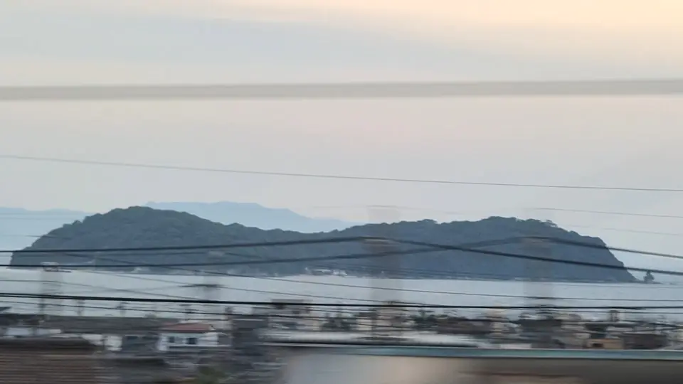

- 見える区間
- 豊橋 → 三河安城
- 座席側
- A席・海側
- タイミング
- 東京発のぞみ基準で約84分後
- 写真
- 2 枚
三河大島はどんな島？
三河大島は、愛知県蒲郡市の沖合いに浮かぶ無人島です。実は「ふたつの島がひとつになった」形をしていて、大きめの北側の島と小さめの南側の島が、砂州でつながっています。空から見るとまさに「ひょうたん」型。周囲約4km、面積約0.2平方kmと小さな島ですが、車窓のように遠くから見た輪郭は、そのくびれのおかげで意外と目に残ります。かつては海水浴場として夏場のみ賑わい、蒲郡港から定期船で渡ることができた時期もありましたが、現在は定期航路がなく、静かな島に戻っています。
もっと見る: 東洋経済オンライン: 三河湾の車窓蒲郡市観光協会: 三河大島Wikipedia: 大島（三河大島）
東京から新大阪方面へ向かう場合は、豊橋 → 三河安城が近づいたらA席・海側の窓を少し早めに見てください。新大阪から東京方面へ向かう場合は、通過順が逆になります。
三河湾と、車窓からの見え方
三河湾は、渥美半島と知多半島に囲まれた比較的浅い内湾で、東京湾や大阪湾に比べて穏やかな海面が広がるのが特徴です。牡蠣・アサリ・海苔などの養殖が盛んで、いくつもの小島が散らばっています。三河大島はその中でも蒲郡沖に浮かぶ代表的な島のひとつで、蒲郡湾沖10km前後の位置にあります。
新幹線からは、豊橋を出て蒲郡・三ケ根方向へ進むにつれてA席側に海面が広がる区間があります。海がずっと開けているのではなく、市街地と丘の合間にちらちらと現れる形なので、意識せずに乗っていると通り過ぎがちです。「ひょうたん型の島」を先に頭に入れて窓の外を眺めると、うっすらとしたシルエットが視野に入ってくることがあります。
この一帯は東洋経済オンラインの車窓連載でも取り上げられており、車窓から見える三河湾の風景としては数少ないランドマークのひとつです。晴天で視程が長い日、朝夕の斜光で島の輪郭が濃く出るタイミングが狙い目です。
位置の目安
地図をひらくスポット位置と、新幹線から見る位置を切り替えられます。
三河大島を見逃さないコツ
1. 先に見る方向を決める
豊橋 → 三河安城が近づいたら、A席・海側の窓を先に意識してください。現在地から追う場合はライブガイド、事前に確認する場合はこのページの地図が役立ちます。
はっきり見えるのは数秒ほど。案内が出てからカメラを探すより、先に座席側と窓の方向を決めておくと拾いやすくなります。
2. 見どころ
豊橋を出て蒲郡付近を進むあいだ、A席側の遠くに水平線が開ける瞬間があります。そのとき、水平線の上にごく低くひょうたん型の輪郭を探してみてください。派手なランドマークではないぶん、見つけた瞬間のちょっとした達成感がある車窓です。
写真で見る三河大島
